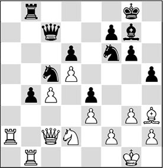
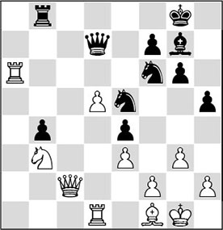
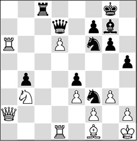
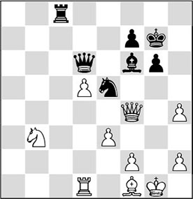
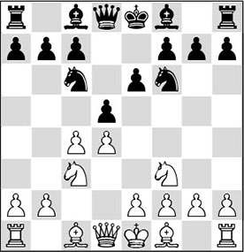

Chapter 26
Epilogue
26.1 Introduction
In this book we have made an attempt to help the club player on his way in his quest to improve his play. As indicated in the beginning, positional play is one of the most difficult components of the game of chess. In Chapter 1, I have indicated that I like to use my training sessions to enhance the general understanding. Questions like: ‘How do I devise a plan?’ or ‘What are the characteristics of a position?’ must serve as beacons, helping us to master the difficult problems.
26.2 The essence of the position
The leitmotiv in this book is Steinitz’s Table of Elements. In this Table, the strategic advantages that can occur in the middlegame are named. In the former Soviet Union, this table was used as a stepping-stone for the trainings held there. It is not surprising that, if the chess student sees many examples of each theme, his level of understanding will rise significantly. This may be one of the explanations why today there is still a large number of strong players emerging from the former Warsaw Pact countries.
We have to make a few marginal comments here. The word ‘element’ suggests that we are dealing with ‘the smallest part’. In other words: if you have reduced the theme to its most elementary form, you might deduce from this that the formulated rule should always apply. Unfortunately, in practice this is not the case. For example, we know that the ‘pawn islands rule’ (Chapter 10) does not always apply. In fact, there are plenty of exceptions, which makes you wonder about the use of such a rule. Therefore, the term ‘element’ does not fully correspond with its meaning, but that does not need to prevent us from regarding ‘Steinitz’s Table of Elements’ as a fine summary, which provides us players with a number of rules of thumb and handles, which we can use to orientate ourselves in difficult middlegame situations.
We should not lose sight of the fact that in one game several themes may influence each other. The trick is to discover what the most ‘dominant feature’ is in a position, as grandmaster Adrian Mikhalchishin once preached during a clinic with top talents in Holland.
Therefore, it is important to ‘delve deep into a position’ in order to compare the various features with each other, and to weigh up which aspects play the most crucial role. In Holland we have always had Jan Timman, who in his analysis spoke of ‘the essence of the position’ that had to be discovered. From his practice I have selected the following subtle fragment.
In the diagram position, Black has sacrificed an exchange for a strong passed pawn and a powerful knight on c5. In order to give an answer to the question how White should ‘break’ this force, Timman gave the following comment in the magazine Schaakbulletin:

‘An important moment in the game. The black knight on c5, in combination with the b-pawn, constitutes an enormous force in the black position. To break this force, 27.♘b3 is insufficient, as after the exchange the other knight would emerge on c5. The text move cuts off the road of the king’s knight to the queenside’.
27.♗h3!
After a normal move like 27.♘b3, there follows 27…♘fd7, with which Black keeps his strong blockade on the dark squares intact. By the way, Black should not play 27…♘xb3?, as after 28.♖xb3 ♘d7 29.♖ab1 ♕a5 30.♕d2! (30.♕b2? ♗g7!) the b4 pawn falls.
The alternative 27.♖a2!?, with which White anticipates the threat of …♗h6-g7, transposes to the game.
The text move is much better than 27.♘xe4?! ♘fxe4 28.♗xe4 b3, and Black wins back material.
27…♗g7 28.♖a2 h5
This looks like an aggressive move, but its real meaning becomes clear in the following variation: 28…♘fd7 29.♗xd7 ♕xd7 30.♘xe4 b3 31.♘xc5 bxc2 32.♖xb8+ ♗f8 33.♘xd7 c1♕+ 34.♔g2, and White wins. By playing 28…h5, Black vacates the h7-square for his king.

29.♘b3!
In this way, White chases away the strong knight from c5, breaking the ‘force’ in Black’s position. The ‘connection’ between Black’s two knights has been cut off with the move 27.♗h3!.
29…♘d3
After the exchange of a pair of knights, White’s task would be made significantly easier.
30.♖d1
White steers towards simplifications. He simply threatens to give back the exchange with 31.♖xd3, after which he will remain a pawn up.
Probably there was an even better possibility. With 30.♗f1! ♘e5 31.♗e2 h4 32.♘d4, the weakness of the b4 pawn, coupled with the possession of the a-file, would have given White a decisive advantage. Black’s compensation has disappeared like snow in summer.
30…♘e5?!
With this, Black’s concept has also misfired. The downside of this move is, of course, that the once so beautiful blockade on the c5-square is now broken. White immediately exploits this.
With 30…♘g4!? 31.♗xg4 hxg4, Black would have stayed in the game, although after 32.♖a6! White is also pulling the strings.
Now Timman definitively breaks through.
31.c5! ♘d3

Timman writes: ‘A slight surprise, and this is also the best way to fight back. After the return of the black knight, the white d-pawn has become in need of help.’
32.cxd6 ♕xd6 33.♗f1 ♘e5
Indirect protection of the b-pawn, since 33…♘xd5 would now fail to 34.♗xd3 ♘c3 35.♗e2.
34.♖a6
The secondary intention behind White’s last move.
34…♕d7

35.♖xf6
White returns the exchange with pleasure. Not only will he now be a healthy pawn up, he also takes the edge off the desperate offensive on White’s vulnerable king position that Kasparov was preparing.
A strong alternative was 35.d6, with the threat 36.♕c7. After 35…♖c8 36.♕a2 ♘f3+ 37.♔h1

Analysis diagram
the ‘desperate offensive’ would also accomplish little. Thus: 37…♗f8 (after 37…♕f5 38.♖a5, the queen cannot maintain her active placement; or 37…♘g4 38.h3, and the knight must return empty-handed) 38.♖a7 ♕e6 39.♘d2, and White exchanges queens, after which all counterplay fades away as well.
35…♗xf6 36.♕xe4 ♖c8?!
In time-trouble Black blunders his b-pawn. He should have tried 36…♕g4, in order to make the technical job difficult for White after 37.♕xg4 hxg4. But in those days Kasparov was not the man to defend a bad position passively.
Another idea was 36…♕a4, in order, after 37.♕c2, to continue with 37…h4, and although also here White is a healthy pawn up, he still has to demonstrate some technique.
37.♕xb4 h4 38.♕f4 ♔g7 39.gxh4
Removing the final sting from the position.
39…♕d6
After 39…♖h8 40.♘c5!, Black has nothing left to hope for either.

40.♘d2
1-0
Before Black had the time to resign, his flag fell. He is lost after 40…♕xd5 41.♘e4 ♕e6 (strictly speaking, 41…♕xd1 is better, but also in that event the win is not too difficult after 42.♕xf6+ ♔g8 43.♕xe5 ♖c1 44.♘g3) 42.♗h3! ♕xh3 43.♕xf6+ ♔g8 44.♖d8+ ♖xd8 45.♕xd8+ ♔g7 46.♕f6+ ♔g8 47.♕xe5.
The essence of the above fragment is that White had to find out how he could break Black’s stronghold on the dark squares. Together, the rook on b8 and the pawn on b4, in cooperation with the strong knight on c5, formed a bastion that was hard to attack. With ♘b3, one of the knights could have been swapped, but its place would have been taken by the other knight after …♘fd7, and White would have gained nothing. This gave White the brilliant idea to ‘cut through’ the cooperation between the knights with 27.♗g2-h3!!. To keep using ‘Steinitzian’ terminology, White had to disturb the cooperation between the black pieces in order to break Black’s blockade on the strong square c5.
26.3 Some marginal notes on Steinitz’s Table
IM Cor van Wijgerden, the man behind the Step-by-Step Method (see also Chapter 2), has been searching for an entirely different approach to positional play. With the help of the following example, Van Wijgerden shows what he encountered when he was discussing games with young pupils.
1.d4 d5 2.c4 e6 3.♘c3 ♘f6 4.♘f3 ♘c6

How can you explain to an 8- or 9-year-old kid that is able to play a nice game of chess that this knight does not stand so well on c6? Experienced chess players know that the knight is better developed to d7 here. But any trainer will immediately feel the inner struggle when trying to explain such choices.
The reason, of course, is that young players grow up with move sequences like 1.e4 e5 2.♘f3 ♘c6 3.♘c3 ♘f6. In the eyes of an 8- or 9-year-old, in the above position it is perfectly logical to develop the knight towards the centre. The reason that the knight does not stand so well there on principle – since it does not really attack the centre here – is not so easy to give. The explanation should obviously be that Black must be able to put pressure on the white centre with …c7-c5. The knight on c6 is not exerting any real pressure on the centre, as the pawn on d4 is well protected. Other reasons why, even after …c7-c5, the knight is often still better on d7 instead of c6, are even harder to make plausible for a very young player. The most important reason is that mostly, Black will develop his bishop to b7 after …b7-b6, after which the knight is not very functional on c6.
Now, the question is: what concepts can you use to make clear why it is better to develop the knight (now or later) to d7? In his instruction manual of Step 6, Van Wijgerden starts with two basic notions:
• Activity
• Vulnerability
‘With these notions I can explain every move a young player makes on the board’, he once explained to me. ‘I prefer not to use rules, where I get the exceptions into the bargain.’
With the help of these two basic notions, Van Wijgerden has succeeded in putting together training material where he has managed to mould derivative themes like ‘improving the worst piece’ or ‘attacking the weakest point’ into exercise material. To readers who want to know more about this, I recommend purchasing this manual.
26.4 Recommendations
Back to Steinitz’s Table of Elements. Playing through and analysing many examples that are classified around a certain theme is always useful. The Table offers a structure that has proved successful with the education of young talents. With the above reflections in the back of our mind, a warning is in order: never apply a ‘little rule’ indiscriminately, and, preferably, do not adhere too dogmatically to what Steinitz has prescribed. Always examine the position you have on the board with a fresh view, and try to distill the correct continuation from the features you see. Be flexible in your thinking and, above all, don’t neglect the tactical motifs, which always play a role!
But do turn the knowledge you have acquired in this book to profit. Hopefully you will indeed be able to make the progress that you aspire to. I hereby express the wish that this book will help you on the right path. Good luck!
Herman Grooten,
January 2017